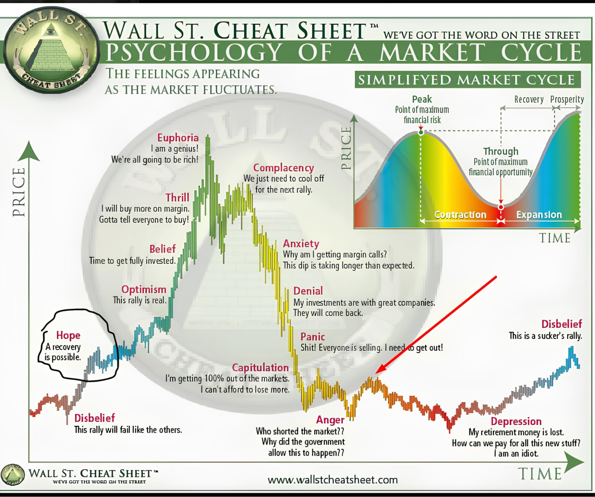

🔄 The 7 Phases of a Market Cycle
Understand how markets move in cycles — accumulation, markup, distribution, and markdown — and how to profit from each phase.
📋 Table of Contents
📌 Market Cycle Overview

Markets move in repeating cycles. Understanding where you are in the cycle gives you a massive edge.
The cycle: Accumulation → Markup → Distribution → Markdown — then it repeats.
📦 Phase 1 — Accumulation

Smart money (institutions) quietly buy while retail is still scared.
- Price is flat / range-bound
- Volume starts increasing quietly
- Most retail traders ignore this phase
- Media sentiment is still negative
Your action: Watch for range formation + increasing volume. Prepare for breakout.
🚀 Phase 2 — Markup (Uptrend Begins)

Price breaks out of the range and starts trending up.
- Higher highs & higher lows form
- Volume increases on breakout
- More traders start noticing
- Media becomes optimistic
Your action: Buy pullbacks. Trade with the trend. This is the best phase to be long.
🎉 Phase 3 — Excess / Euphoria
Everyone is buying. "It can only go up!" mentality.
- Parabolic moves / vertical candles
- Extreme greed in the market
- New retail traders enter heavily
- Media is hyper-bullish
⚠ Danger zone! Smart money starts selling to retail here.
📊 Phase 4 — Distribution

Institutions sell their positions to retail buyers.
- Price forms a range at the top
- Large volatile candles but no net direction
- Volume is high but price goes sideways
- Divergence appears on RSI/MACD
Your action: Start taking profits. Tighten stops. Do NOT add to long positions.
📉 Phase 5 — Markdown (Downtrend Begins)
Price breaks below the distribution range.
- Lower highs & lower lows form
- Breakdowns on high volume
- Retail traders "buy the dip" and get trapped
- Media turns cautious/bearish
Your action: Go short or stay in cash. Do NOT fight the downtrend.
😱 Phase 6 — Panic / Capitulation
Fear peaks. Everyone sells at the worst possible time.
- Sharp, violent drops
- Extreme fear in the market
- Retail traders sell at the bottom
- Media says "market is dead"
"Be fearful when others are greedy, and greedy when others are fearful." — Warren Buffett
🔄 Phase 7 — Recovery / Re-Accumulation
Smart money starts buying again at low prices.
- Price stabilizes
- Volume decreases (sellers exhausted)
- Slow base formation
- Cycle begins again → Phase 1
Your action: Watch for accumulation signs. The next cycle is about to begin.
⭐ How to Use This Knowledge
- Identify which phase the market is currently in
- Buy in accumulation, ride the markup
- Sell in distribution, avoid the markdown
- Don't fight the cycle — align with it
- Use volume and structure to confirm phases
Markets are cyclical. If you know the cycle, you know the game.